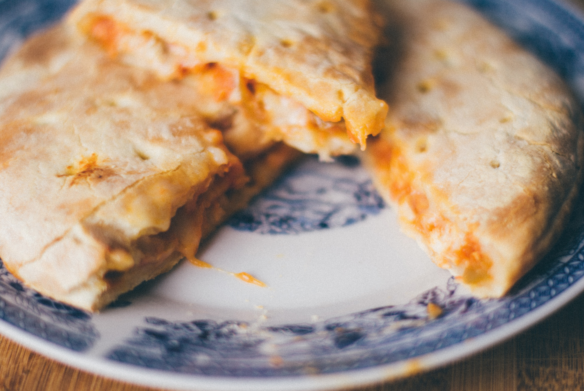

Home
Buffalo Chicken Calzone Recipe

Description:
This is a delicious buffalo chicken calzone recipe that's perfect for a quick and easy meal. It features a combination of shredded chicken, buffalo sauce, and butter in a crispy pastry shell.
It's a great option for those who love spicy and savory flavors. Serve with blue cheese or your favorite sauce and enjoy!
Ingredients(One serving):
- 1 refrigerated pizza dough
- 2 tablespoons butter
- ¼ cup Buffalo wing sauce
- 1 pound skinless, boneless chicken breast halves
- 2 tablespoons vegetable oil divided
- 2 cups shredded mozzarella cheese
Steps:
- Preheat the oven to 410°F (210°C), and grease a 12-inch pizza pan.
- Place chicken in a large pot and cover with salt water before bringing to a boil. Cook chicken until no longer pink in the center and the juices are clear (about 15 minutes). A thermometer inserted into the thickest part should read 165°F (74°C). Transfer the chicken to a board or bowl and shred it with forks.
- Melt Butter in a small saucepan over medium heat. Cook and stir the shredded chicken and buffalo wing sauce in hot butter until the chicken is well coated and heated through (about 2-4 minutes).
- Turn pizza dough onto a generously floured surface and roll it out to a 12-inch circle. Brush the dough with 1 tablespoon of oil and sprinkle with one cup of shredded mozzarella cheese, while leaving a one-inch border around the edges. Spread the chicken mixture over the cheese, and top with the remaining 1 cup of cheese.
- Fold the dough in half and pinch the edges together to hold and seal. Transfer the calzone to the pan and brush the top with the remaining oil.
- Finally, bake in the preheated oven until the crust is golden brown (about 17-20 minutes).